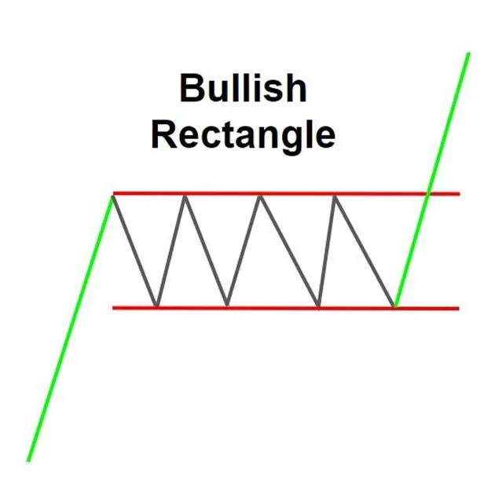
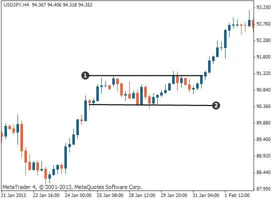

Bullish Rectangle Chart Pattern es un patrón de gráfico de continuidad que se forma durante una tendencia ascendente. Muestra que la presión de compra y venta es igual y que la dirección de la tendencia no es probable que cambie. El patrón se define por un período de consolidación dentro de una tendencia, que está limitado por un nivel paralelo de apoyo y resistencia.
Los comerciantes generalmente buscan entrar en una posición larga (comprar) después de que el precio se rompa por encima del nivel de resistencia del rectángulo. La altura del rectángulo se puede añadir al punto de breakout para establecer un objetivo para el movimiento del precio después de la brekout.
Siempre se recomienda buscar confirmaciones con otras herramientas de análisis técnico antes de tomar una decisión comercial basada en este patrón.
Esta es una explicación general de un patrón de gráfico rectángulo bullicio. El contenido de las páginas mencionadas puede proporcionar interpretaciones más detalladas o específicas.
